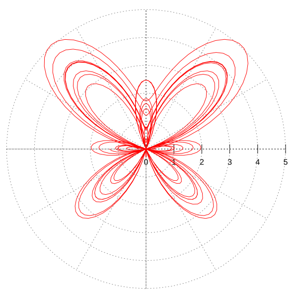
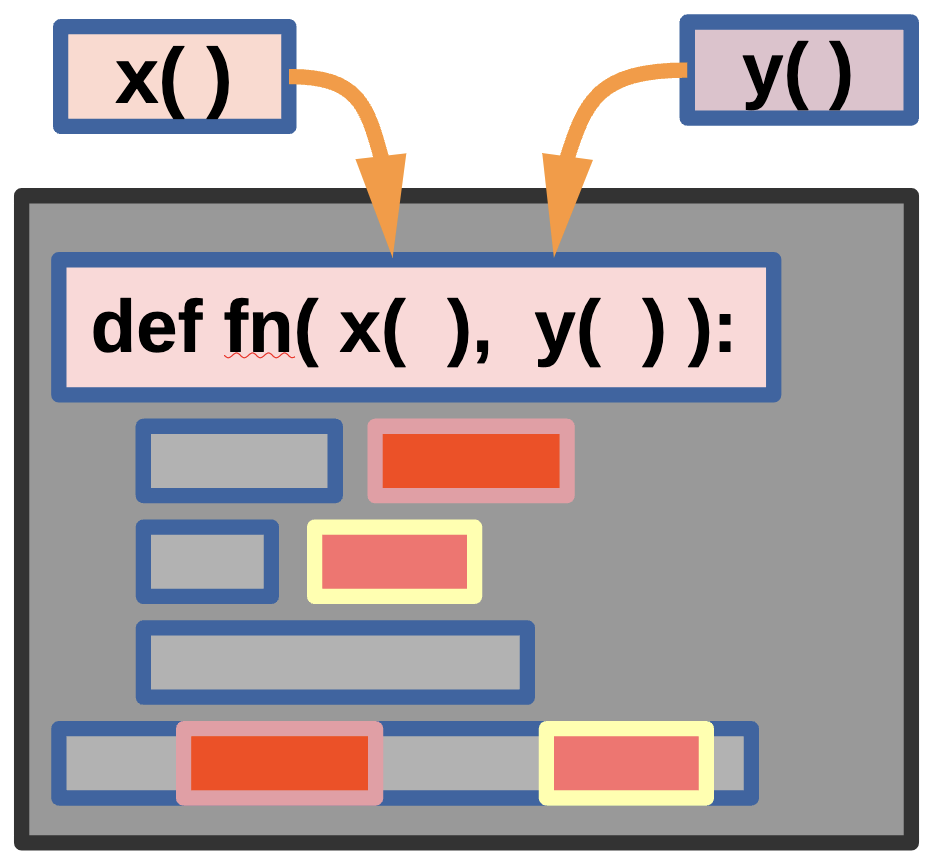
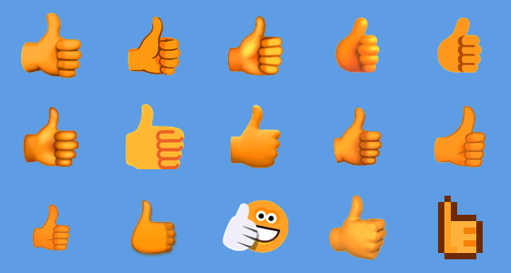

Higher-Order Functions, Decorators & Simple Classes
Powerful Python Patterns for Cleaner Code
On For Today
Let’s explore three powerful Python patterns!
Topics covered in today’s discussion:
- 🐍 Higher-Order Functions — Functions that take or return other functions
- 🐍 Passing Functions as Arguments — Treating functions as first-class citizens
- 🐍 Returning Functions from Functions — Building function factories
- 🐍 Decorators — Wrapping functions to add behavior
- 🐍 Decorator Syntax (
@) — Python’s elegant shorthand - 🐍 Simple Classes — Bundling data and behavior together
- 🐍 The
__init__Method — Constructing objects - 🐍 Methods and Attributes — Working with class instances
- 🐍 Challenge Problems & Solutions — Practice what you’ve learned!

Motivation: Parametric Curves & Higher-Order Functions
Important
The Butterfly Curve — A Parametric Function A parametric equation expresses coordinates as functions of a shared variable \(t\):
\[x(t) = \sin(t)\!\left(e^{\cos t} - 2\cos(4t) - \sin^5\!\tfrac{t}{12}\right)\]
\[y(t) = \cos(t)\!\left(e^{\cos t} - 2\cos(4t) - \sin^5\!\tfrac{t}{12}\right)\]
Note
As \(t\) sweeps from \(0\) to \(12\pi\), the pair \((x(t),\,y(t))\) traces the butterfly shape.
The Python Connection
Important
Plotting this curve means applying the same mathematical building blocks — \(e^{\cos t}\), \(\cos(4t)\), \(\sin^5(t/12)\) — inside both \(x\) and \(y\). We can define each piece as a function and pass it as an argument. That is precisely what higher-order functions make possible!

Plotting the Butterfly Curve in Python
Higher-Order Functions Make This Clean
import numpy as np
import matplotlib.pyplot as plt
# Define each reusable mathematical building block as a function
def radial(t):
return np.exp(np.cos(t)) - 2*np.cos(4*t) - np.sin(t/12)**5
def x_coord(t, r_func): # <-- accepts a function as an argument!
return np.sin(t) * r_func(t)
def y_coord(t, r_func): # <-- accepts a function as an argument!
return np.cos(t) * r_func(t)
t = np.linspace(0, 12 * np.pi, 10_000)
plt.figure(figsize=(6, 6))
plt.plot(x_coord(t, radial), y_coord(t, radial), linewidth=0.6)
plt.axis("equal"); plt.axis("off")
plt.title("Butterfly Curve"); plt.tight_layout(); plt.show()The higher-order connection: x_coord and y_coord each accept r_func as a parameter — they don’t hard-code the radial formula. Swapping in a different function instantly produces a different curve. This is a higher-order function in real scientific code.
Parametric Functions with Python

Note
We can plug in any function we like for fn() — the functions x() and y() still work as parameters! This is the essence of higher-order programming: variables and functions can be used as parameters.
Interactive Parametric Curve Explorer Code
Part 1: Higher-Order Functions
What Is a Higher-Order Function?
A higher-order function is a function that does at least one of the following:
- Takes another function as an argument, or
- Returns a function as its result.
You have already seen some! map(), filter(), and sorted() are all higher-order functions because they accept a function as a parameter.
Key Insight: In Python, functions are first-class citizens — they can be stored in variables, passed around, and returned, just like numbers or strings.
Functions Are Just Objects
Important
How it works: yell = shout does not call the function. It copies the reference to the function object into yell. Both names point to the same function — calling either one produces the same result.
Passing a Function as an Argument — Simple
A Function That Accepts Another Function
def apply_twice(func, value):
return func(func(value))
def add_three(x):
return x + 3
result = apply_twice(add_three, 10)
print(result) # Output: 16Step-by-step: apply_twice(add_three, 10) sets func = add_three and value = 10. Inner call: func(10) → add_three(10) → 13. Outer call: func(13) → add_three(13) → 16. Result 16 is returned.
Passing a Function as an Argument — More Complex
Applying Different Operations to a List
def transform_list(data, operation):
result = []
for item in data:
result.append(operation(item))
return result
def square(x): return x ** 2
def negate(x): return -x
numbers = [1, 2, 3, 4, 5]
print(transform_list(numbers, square)) # [1, 4, 9, 16, 25]
print(transform_list(numbers, negate)) # [-1, -2, -3, -4, -5]
print(transform_list(numbers, str)) # ['1', '2', '3', '4', '5']Important
How it works: transform_list doesn’t care which function it receives — it simply calls operation(item) for each element. We can even pass the built-in str. This makes the function reusable with any transformation.
Returning a Function from a Function — Simple
Important
How it works: make_multiplier(2) builds and returns the inner multiplier function with factor = 2 baked in. double is now that function. This is called a closure — the inner function remembers factor from its enclosing scope even after make_multiplier has finished.
Returning a Function — More Complex
A Greeting Factory
def make_greeter(greeting, punctuation="!"):
def greeter(name):
return f"{greeting}, {name}{punctuation}"
return greeter
say_hello = make_greeter("Hello")
say_goodbye = make_greeter("Goodbye", "...")
say_hey = make_greeter("Hey", "! 👋")
print(say_hello("Alice")) # Hello, Alice!
print(say_goodbye("Bob")) # Goodbye, Bob...
print(say_hey("Charlie")) # Hey, Charlie! 👋Why this is useful: Instead of three separate greeting functions we build one factory that produces customized functions on demand. Each returned function carries its own greeting and punctuation values locked in via closure.
Built-In Higher-Order Functions Revisited
map(), filter(), and sorted() Are Higher-Order Functions
They are higher-order because they accept a function as an argument. You can pass any callable — including built-in functions — directly, without parentheses.
numbers = [1, -3, 5, -2, 8, -7, 4]
absolutes = list(map(abs, numbers))
print(absolutes) # [1, 3, 5, 2, 8, 7, 4]
positives = list(filter(lambda x: x > 0, numbers))
print(positives) # [1, 5, 8, 4]
by_abs = sorted(numbers, key=abs)
print(by_abs) # [-2, 1, -3, 4, 5, -7, 8]Notice: abs is passed directly — no parentheses, no lambda needed. Any callable works!
Part 2: Decorators
What Is a Decorator?
A decorator is a higher-order function that takes a function, adds some behavior to it, and returns a new function — all without modifying the original function’s code.
Analogy: Think of a decorator like a gift wrapper 🎁. The gift (your function) stays the same; the wrapper adds something extra — logging, timing, validation — around it.
Decorator Pattern — Manual Approach
Before the @ Syntax
def my_decorator(func):
def wrapper():
print("Something happens BEFORE the function.")
func()
print("Something happens AFTER the function.")
return wrapper
def say_hello():
print("Hello!")
say_hello = my_decorator(say_hello) # manually decorate
say_hello()Output: Something happens BEFORE the function. / Hello! / Something happens AFTER the function.
Important
How it works: my_decorator wraps say_hello inside wrapper and returns it. Re-assigning say_hello = my_decorator(say_hello) means every future call runs wrapper(), which sandwiches the original call with extra behavior.
The @ Syntax — Python’s Shorthand
Important
Key Point: @my_decorator above a function is exactly the same as writing say_goodbye = my_decorator(say_goodbye). The @ symbol is syntactic sugar — it looks cleaner and is the Pythonic way.
Decorator with Arguments — Simple
Handling Any Signature with *args and **kwargs
def log_call(func):
def wrapper(*args, **kwargs):
print(f"Calling {func.__name__} with args={args}")
result = func(*args, **kwargs)
print(f"{func.__name__} returned {result}")
return result
return wrapper
@log_call
def add(a, b):
return a + b
print(add(3, 5))
# Calling add with args=(3, 5)
# add returned 8
# 8Important
How it works: *args captures positional arguments as a tuple; **kwargs captures keyword arguments as a dictionary. The wrapper can therefore decorate any function signature. The original return value is captured and passed through unchanged.
A Practical Decorator — Timing a Function
Measuring Execution Time
import time
def timer(func):
def wrapper(*args, **kwargs):
start = time.time()
result = func(*args, **kwargs)
elapsed = time.time() - start
print(f"{func.__name__} took {elapsed:.4f} seconds")
return result
return wrapper
@timer
def slow_sum(n):
total = 0
for i in range(n):
total += i
return total
result = slow_sum(1_000_000)
print(f"Result: {result}")Why decorators are powerful: Timing was added to slow_sum without changing its code. @timer can be placed on any function to profile it — reusable, composable behavior.
Stacking Decorators
Multiple Decorators on One Function
Important
Execution order: Decorators apply bottom-up. @italic wraps say first, then @bold wraps the result. Calling say("Hello") is equivalent to bold(italic(say))("Hello").
Part 3: Simple Classes
What Is a Class?
A class is a blueprint for creating objects. Each object (instance) bundles together:
- Attributes — data (variables) that belong to the object
- Methods — functions that belong to the object
Analogy: A class is like a cookie cutter 🍪. The cutter (class) defines the shape; each cookie (instance) is made from it and can have its own decorations (attribute values).
Your First Class — Simple Example
Important
Step-by-step: class Dog: defines the blueprint. __init__ is the constructor — it runs automatically when you create a new instance. self refers to the specific object being created. my_dog.bark() passes my_dog as self automatically.
Understanding self
Each Instance Has Its Own Data
class Counter:
def __init__(self):
self.count = 0
def increment(self):
self.count += 1
def get_count(self):
return self.count
counter_a = Counter()
counter_b = Counter()
counter_a.increment()
counter_a.increment()
counter_b.increment()
print(counter_a.get_count()) # 2
print(counter_b.get_count()) # 1Key Point: counter_a and counter_b each have their own count attribute. self.count inside counter_a.increment() only changes counter_a’s data — counter_b is unaffected.
A More Complete Class — BankAccount
Encapsulating Data and Operations
class BankAccount:
def __init__(self, owner, balance=0):
self.owner = owner
self.balance = balance
def deposit(self, amount):
if amount > 0:
self.balance += amount
return f"Deposited ${amount}. Balance: ${self.balance}"
return "Amount must be positive."
def withdraw(self, amount):
if amount > self.balance:
return "Insufficient funds!"
self.balance -= amount
return f"Withdrew ${amount}. Balance: ${self.balance}"
account = BankAccount("Alice", 100)
print(account.deposit(50)) # Deposited $50. Balance: $150
print(account.withdraw(200)) # Insufficient funds!How it works: BankAccount keeps data (owner, balance) and operations (deposit, withdraw) together. This prevents outside code from misusing the data and makes the logic easy to maintain.
The __str__ Method — Making Objects Printable
Custom String Representation
class Student:
def __init__(self, name, grade):
self.name = name
self.grade = grade
def __str__(self):
return f"Student({self.name}, grade={self.grade})"
def is_passing(self):
return self.grade >= 60
s1 = Student("Alice", 92)
s2 = Student("Bob", 55)
print(s1) # Student(Alice, grade=92)
print(s1.is_passing()) # True
print(s2.is_passing()) # FalseWhy __str__? Without it print(s1) shows <__main__.Student object at 0x...>. Defining __str__ tells Python how to render your object as a human-readable string whenever print() or str() is called on it.
Classes with Collections — Playlist
Storing a List Inside an Object
class Playlist:
def __init__(self, name):
self.name = name
self.songs = []
def add_song(self, song): self.songs.append(song)
def total_songs(self): return len(self.songs)
def show(self):
print(f"🎵 {self.name}")
for i, song in enumerate(self.songs, 1):
print(f" {i}. {song}")
my_playlist = Playlist("Study Vibes")
my_playlist.add_song("Lo-Fi Beats")
my_playlist.add_song("Piano Chill")
my_playlist.show()
print(f"Total: {my_playlist.total_songs()} songs")Important
How it works: self.songs = [] creates an independent list per instance. Each Playlist object manages its own song list; the methods provide a clean interface for manipulating it.
Classes + Higher-Order Functions Together
sorted() and filter() Work Great with Objects
class Product:
def __init__(self, name, price):
self.name = name
self.price = price
def __str__(self):
return f"{self.name}: ${self.price:.2f}"
products = [
Product("Laptop", 999.99),
Product("Mouse", 29.99),
Product("Keyboard", 79.99),
]
by_price = sorted(products, key=lambda p: p.price)
affordable = list(filter(lambda p: p.price < 100, products))
for p in by_price: print(p)
print("---")
for p in affordable: print(p)The connection: Higher-order functions like sorted() and filter() accept a lambda that extracts an attribute from each object. This shows how all three topics — higher-order functions, lambdas, and classes — work together in real Python code.
Challenge Problems

🏁 Try These on Your Own!
Work through each challenge before looking at the solutions on the next slides.
Challenge 1 — Apply a Function Repeatedly
Challenge 2 — A Decorator That Counts Calls
Decorator Challenge
Write a decorator count_calls that tracks how many times the decorated function is called. Store the count as an attribute on the wrapper.
Challenge 3 — A Rectangle Class
Class Challenge
Create a Rectangle class with width and height, an area() method, a perimeter() method, an is_square() method, and a __str__ method.
Challenge 4 — Function Composer
Higher-Order Function Challenge
Write compose(f, g) that returns a new function applying g first, then f. In math: compose(f, g)(x) = f(g(x)).
Challenge 5 — GradeBook with Higher-Order Functions
Putting It All Together!
Build a GradeBook class with: add_student(name, grade), get_passing(min_grade=60) using filter, get_curved_grades(curve_func) using map, and top_student().
gb = GradeBook()
gb.add_student("Alice", 92)
gb.add_student("Bob", 55)
gb.add_student("Charlie", 78)
gb.add_student("Diana", 43)
print(gb.get_passing())
# Expected: ['Alice', 'Charlie']
print(gb.get_curved_grades(lambda g: g + 10))
# Expected: {'Alice': 102, 'Bob': 65, 'Charlie': 88, 'Diana': 53}
print(gb.top_student())
# Expected: AliceChallenge Solutions
Solution 1 — Apply a Function Repeatedly
def apply_n_times(func, value, n):
result = value
for _ in range(n):
result = func(result)
return result
def double(x):
return x * 2
print(apply_n_times(double, 3, 4)) # 48Important
How it works: result starts at 3. Each loop iteration applies func, chaining output to input: 3 → 6 → 12 → 24 → 48. This is a higher-order function because func is received as a parameter.
Solution 2 — Decorator That Counts Calls
def count_calls(func):
def wrapper(*args, **kwargs):
wrapper.call_count += 1
return func(*args, **kwargs)
wrapper.call_count = 0
return wrapper
@count_calls
def say_hi():
print("Hi!")
say_hi(); say_hi(); say_hi()
print(f"say_hi was called {say_hi.call_count} times")Important
How it works: Functions are objects — you can attach attributes to them. wrapper.call_count = 0 initialises the counter on the function object itself. Each call increments it before delegating to the original func. After @count_calls, say_hi is wrapper, so say_hi.call_count gives the total.
Solution 3 — Rectangle Class
class Rectangle:
def __init__(self, width, height):
self.width = width
self.height = height
def area(self): return self.width * self.height
def perimeter(self): return 2 * (self.width + self.height)
def is_square(self): return self.width == self.height
def __str__(self): return f"Rectangle({self.width} x {self.height})"
r1 = Rectangle(5, 3)
r2 = Rectangle(4, 4)
print(r1) # Rectangle(5 x 3)
print(r1.area()) # 15
print(r1.is_square()) # False
print(r2.is_square()) # TrueImportant
How it works: __init__ stores dimensions as instance attributes. Each method uses self to access that specific instance’s data. __str__ provides a readable string when print() is called on the object.
Solution 4 — Function Composer
def compose(f, g):
def composed(x):
return f(g(x))
return composed
def add_one(x): return x + 1
def double(x): return x * 2
add_then_double = compose(double, add_one)
double_then_add = compose(add_one, double)
print(add_then_double(5)) # 12
print(double_then_add(5)) # 11Important
How it works: compose(f, g) returns composed — a closure that calls g first, feeds the result to f. add_then_double(5): add_one(5) = 6, then double(6) = 12. double_then_add(5): double(5) = 10, then add_one(10) = 11. composed is a closure — it remembers f and g from the enclosing scope.
Solution 5 — GradeBook (Code)
class GradeBook:
def __init__(self):
self.students = {}
def add_student(self, name, grade):
self.students[name] = grade
def get_passing(self, min_grade=60):
passing = filter(
lambda item: item[1] >= min_grade,
self.students.items()
)
return [name for name, grade in passing]
def get_curved_grades(self, curve_func):
curved = map(
lambda item: (item[0], curve_func(item[1])),
self.students.items()
)
return dict(curved)
def top_student(self):
return max(self.students, key=self.students.get)Solution 5 — GradeBook (How It Works)
gb = GradeBook()
gb.add_student("Alice", 92); gb.add_student("Bob", 55)
gb.add_student("Charlie", 78); gb.add_student("Diana", 43)
print(gb.get_passing()) # ['Alice', 'Charlie']
print(gb.get_curved_grades(lambda g: g + 10)) # {'Alice': 102, ...}
print(gb.top_student()) # AliceExplanation
self.studentsis a dict mapping names → grades.get_passing()usesfilter()onself.students.items()— keeps pairs whose grade ≥min_grade; a list comprehension extracts just the names.get_curved_grades()usesmap()to applycurve_functo every grade, returning a new dict. Acceptingcurve_funcas a parameter makes this a higher-order method.top_student()usesmax()withkey=self.students.get— finds the key with the highest value.
What’s the Big Picture?
Higher-Order Functions
- Accept or return other functions
- Functions are first-class citizens in Python
- Closures remember their enclosing scope
map(),filter(),sorted()are built-in examples
Decorators
- Wrap a function to add behavior
@decoratoris clean syntactic sugar*args,**kwargshandle any signature- Decorators can be stacked (bottom-up order)
- Uses: logging, timing, validation
Simple Classes
- Blueprint for creating objects
__init__is the constructorselfrefers to the current instance__str__makes objects printable- Combine with higher-order functions for powerful, expressive code
